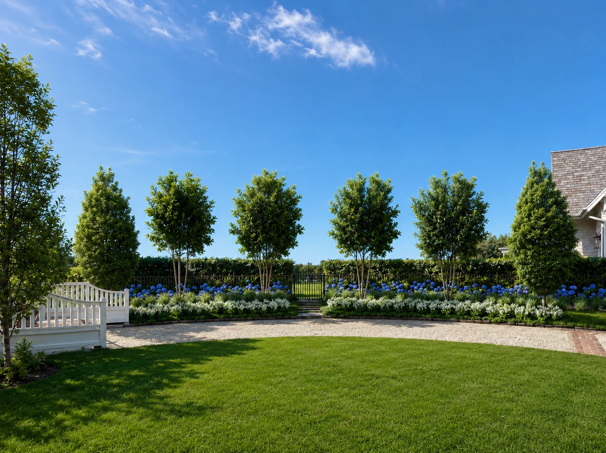
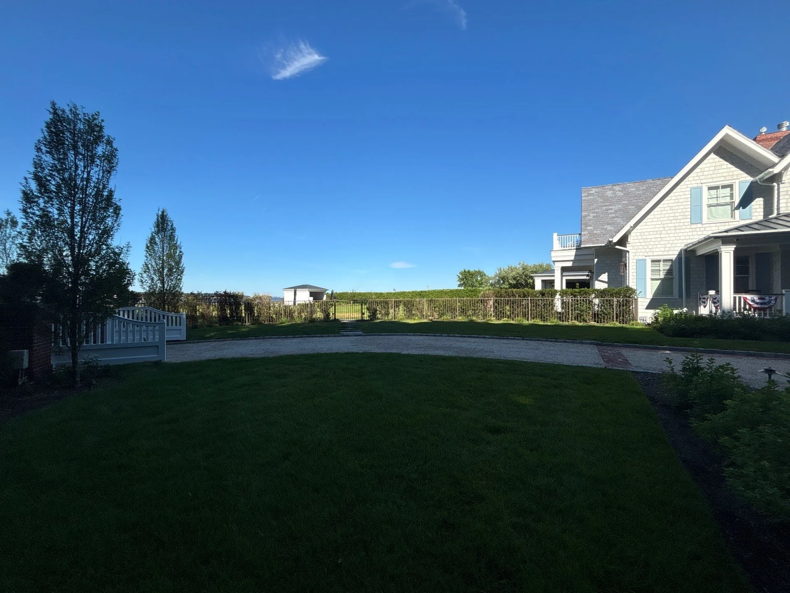
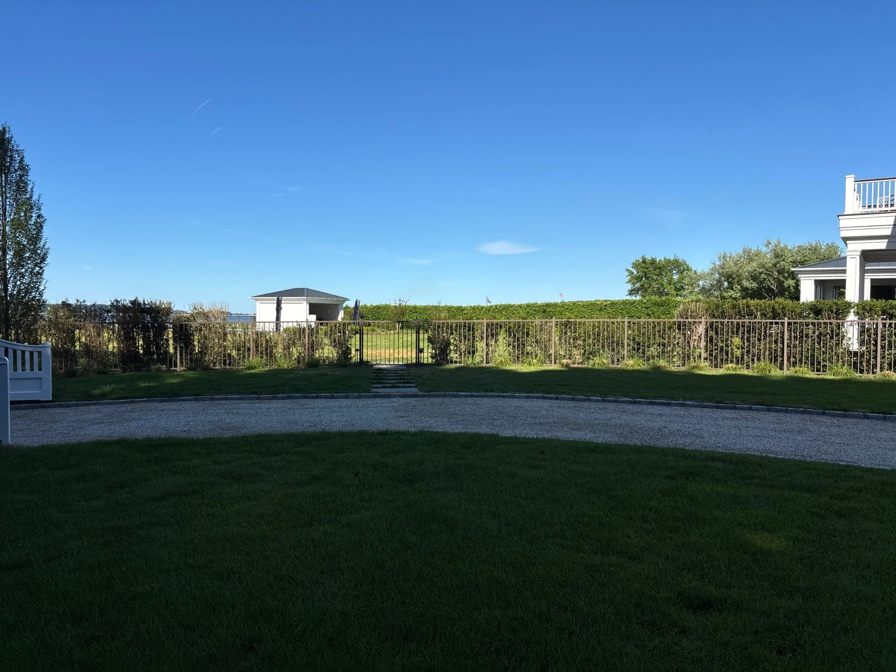
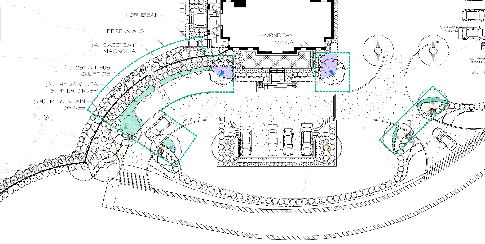
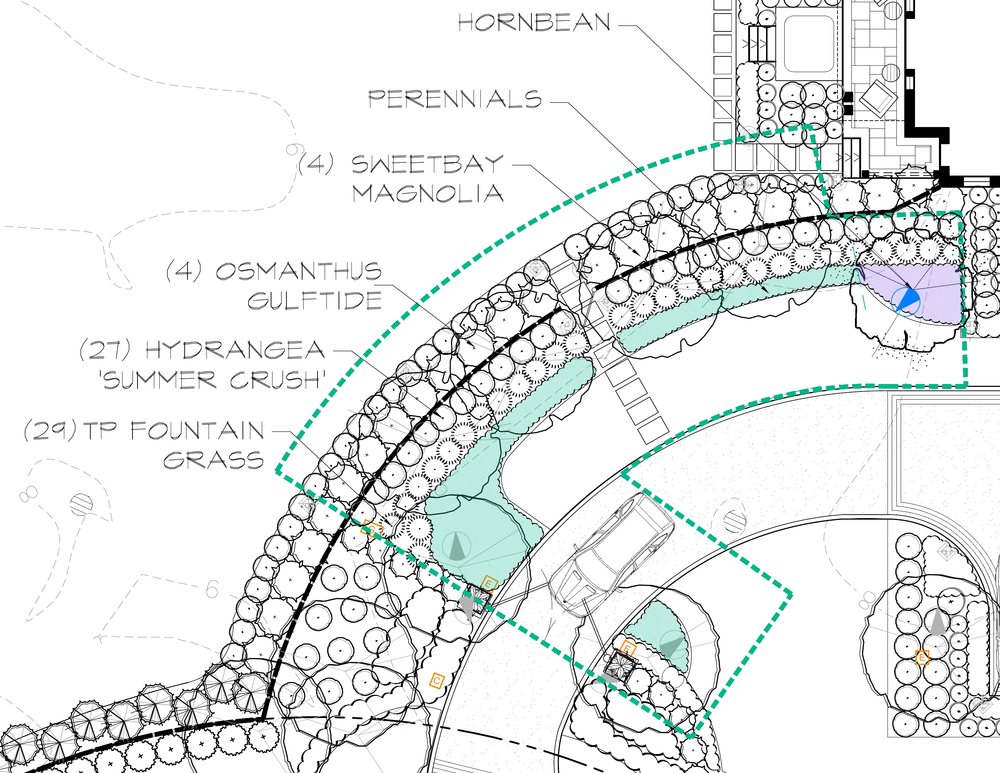
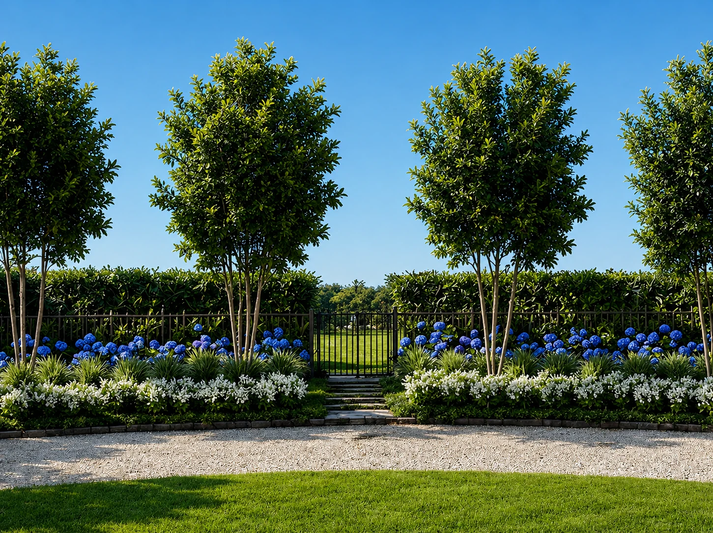

Layered Arrival
From planting plan
to an arrival experience.
- Year
- 2026
- Role
- Creative Design Intern
- Focus
- Plan interpretation · Planting studies
- Tools
- Photoshop · Luma · ChatGPT

Start with the arrival.
The curved drive, lawn, fence, and gates establish the setting for this planting study. The site photographs provide two useful scales: the wider approach and a closer view of the gate and stepping-stone connection.
My visualization work focused on making the proposed planting readable within that existing setting—showing layers and enclosure while keeping the route to the gate clear.




My role: interpretation and visualization. Landscape design direction, plans, and supplied site references: The Laurel Group design team. Renderings are AI-assisted concept studies.
A planting scheme
has structure.
The supplied landscape-enhancement plan locates planting beds around the drive and house. Reading it at two scales connects the overall circulation pattern to the types and quantities of plants within an individual bed.




Plant types & quantitiesRead the labels.
The detail calls out 4 Sweetbay magnolias, 4 Osmanthus ‘Gulftide’, 27 Hydrangea ‘Summer Crush’, and 29 TP fountain grasses.
Spatial relationshipsRead the gaps.
The planting bands curve around the approach while paths connect across them. Openings and edges matter as much as the planted areas.
Show layers.
Keep the gate in view.
The wider opening image shows the planting against the driveway curve. This closer study brings the gate and stepping stones forward, with tree canopies above, flowering shrubs through the middle, and a low border at the lawn.
The plan records plant types and quantities; the renderings explore approximate scale, layering, and atmosphere. Together they communicate both the organization of the proposal and the experience of approaching it.

